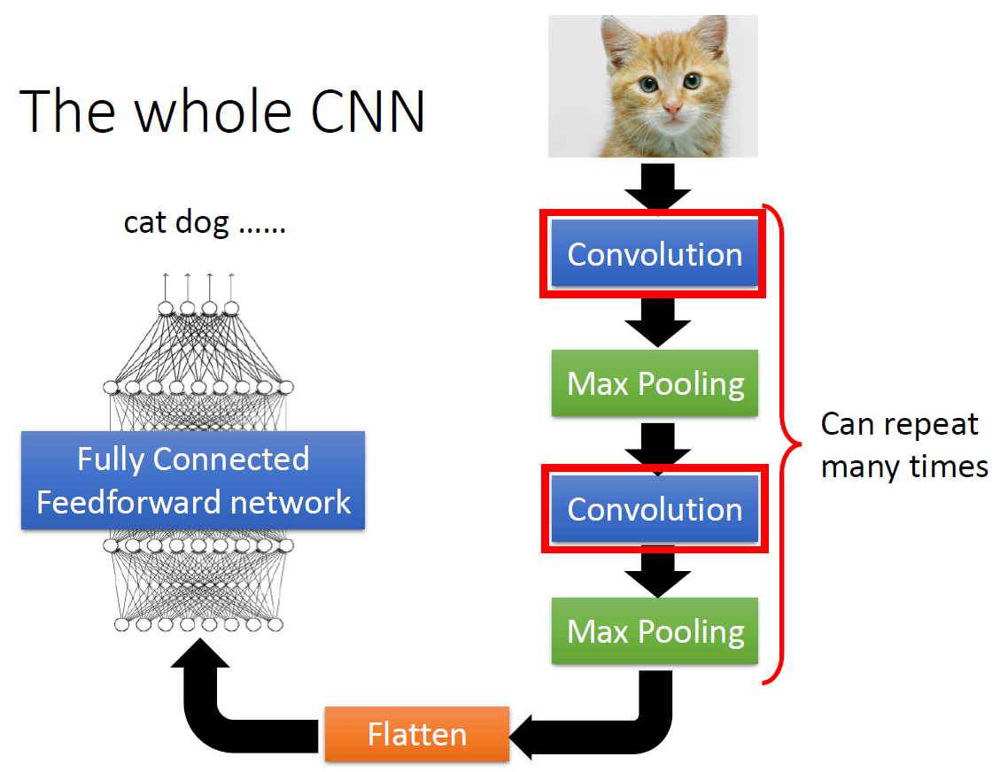
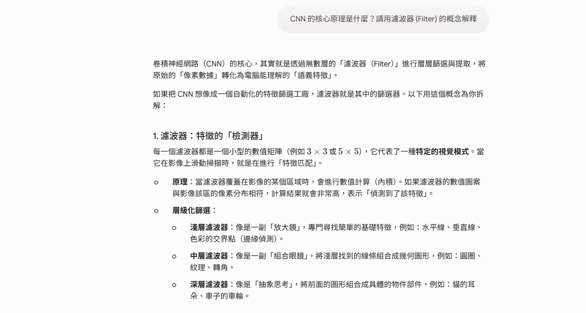
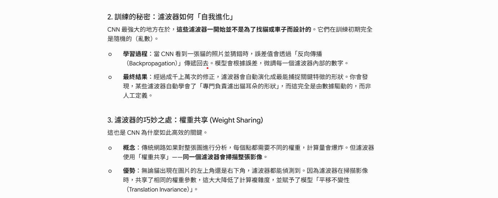
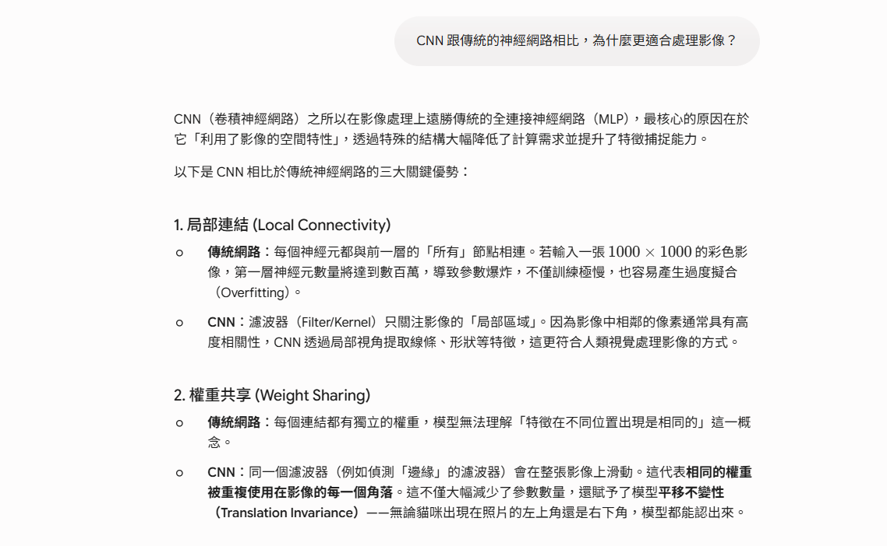
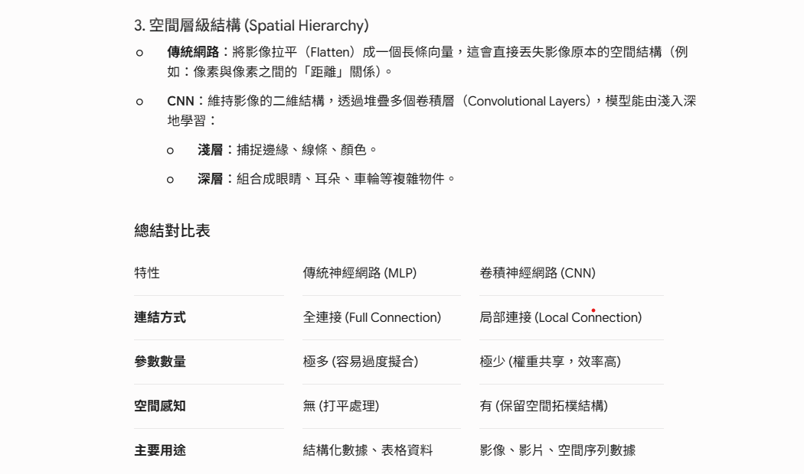

人工智慧導論期末報告
-- CNN演算法 --
by 111316013 陳彥愷
演算法介紹
CNN 是一種專門設計用於處理具有「網格狀結構」資料（例如影像）的深度學習模型。
它模仿了人類大腦視覺皮層處理資訊的方式，能夠自動從圖片中學習並提取特徵，而不需要人工進行繁雜的特徵工程。
CNN主要解決了以下問題 :
(1)平移不變性 : 無論物件出現在影像的哪個角落，CNN 都能識別出來。
(2)特徵自動提取：從低階的點、線，自動組合出高階的物件形狀（如眼睛、臉部）。
(3)減少運算複雜度： 它通過共享參數，大幅降低了模型的參數數量，讓電腦能更有效率地學習複雜圖像。
核心概念：CNN 運作流程
CNN 的架構通常由以下幾個核心層堆疊而成：
* 卷積層 (Convolutional Layer)：使用「卷積核」（Filter/Kernel）在影像上滑動，計算局部特徵。
這就像是用放大鏡掃描影像，捕捉邊緣或特殊圖案。
* 激勵函數層 (Activation Layer, 如 ReLU)：引入非線性，讓模型能學習更複雜的特徵組合。
* 池化層 (Pooling Layer)：縮小影像尺寸，保留最顯著的特徵，減少運算量，同時防止過擬合（Overfitting）。
* 全連接層 (Fully Connected Layer)：將提取到的特徵展平，用於最終的分類或回歸任務。

CNN的常見應用
* 影像分類： 相簿自動辨識人臉或物體
* 醫學影像分析：藉此輔助醫師判斷 X 光片或 MRI 中的腫瘤區域
* 臉部辨識及語音辨識
AI 輔助學習紀錄
AI互動過程記錄
我的提問：「CNN 的核心原理是什麼？請用濾波器（Filter）的概念解釋。」


圖 1~圖3 : AI 對於 CNN 濾波器原理的解析
AI 回答重點摘要：
核心功能：濾波器是影像的「檢測器」，透過在影像上滑動掃描，從淺層的線條特徵逐漸組合為深層的物件特徵。
訓練機制：濾波器的數值是透過反向傳播（Backpropagation）自我演化的，能自動學會捕捉關鍵特徵，而非人工定義。
效率關鍵：透過「權重共享」機制，同一濾波器能掃描整張影像，不僅大幅降低計算複雜度，還賦予模型「平移不變性」。
我的提問：「CNN 跟傳統的神經網路相比，為什麼更適合處理影像？」


圖 4~圖5 : AI 對於CNN與傳統神經網路的比較
AI 回答重點摘要：
局部連接（Local Connectivity）：CNN 透過濾波器只關注局部區域，更符合視覺處理方式。
權重共享（Weight Sharing）：同一濾波器在整張影像滑動，大幅減少參數並賦予模型平移不變性。
空間層級結構（Spatial Hierarchy）：CNN 維持影像二維結構，能由淺入深地學習複雜物件。
查證與修正
針對在AI裡提到CNN濾波器的解析我差尋了多方面的資料，與AI對比後得到以下小結:
1. 每一層卷積層的 filter 不會只有一個:
我原本以為每一層的濾波器個數都是固定的，但其實看了其他資料發現其實大多數的濾波器個數都不一，
像下方圖片中LeNet-5 結構， 第一層的卷積層就給了 6 個 3X3 kernel，
也就是說在這同一層中就有 54 個權重需要同時更新， 而這六個 filter 也會相對應給出六個 feature map 。
2. CNN跟MLP應用在視訊資料上的表現現狀 :
當我查詢CNN跟MLP之間的比較時發現，兩者在視訊資料處理領域甚至展現顯著的效能差距，
CNN在視訊分析任務中保持著顯著優勢，這主要歸功於其透過專門的架構組件捕捉空間層次結構和時間依賴性的固有能力，
先進的CNN架構在這些資料集上通常能達到85%至95%的準確率，而傳統的MLP在類似任務上的準確率卻難以超過60%至70%，
CNN透過權重共享和分層特徵學習展現出更高的參數效率，使其更適用於資源受限的視訊處理應用。
視覺化說明
我將上面所學習到的知識進行統整，把資料交給Gemini生成一張有關CNN的介紹圖。
讓第一次接觸CNN這個演算法的人能夠藉此圖了解到CNN的運作原理與核心概念，
用圖像化的模式增加記憶點及印象。
CNN在自動駕駛的應用
應用場景
在自動駕駛系統中，影像充滿了複雜的空間結構（如車道線的延伸、車輛的輪廓），
CNN 的卷積層能像素中萃取特徵車輛透過攝影機即時捕捉外部環境，精確辨識道路上的關鍵資訊。
以下有幾種應用場景 :
行人與交通偵測
車輛行駛時，攝影機需即時掃描路面上移動的物體，利用 CNN 的「特徵提取」功能
分辨路上的車輛及障礙物，能在毫秒內框出目標物體的位置，確保自駕車能隨時避開行人。
車道線與路面邊緣偵測
高速公路或市區道路的標線、路緣石常需要進行偵測和重新標記，
CNN會進行「影像分割 (Segmentation)」並將像素分類，藉此將路面區域標記為「可通行區域」，
在模糊的標線或複雜的陰影下保持高準確度的邊界識別。
環境感知與危險預警
我們常需要偵測路面上的坑洞、掉落物或車道外的異狀，利用CNN
能有效區分平坦路面與異常凸起，針對「未定義區域」進行感知。
挑戰與未來展望
極端天氣與環境適應性
CNN 在強烈反光、大雨、濃霧或夜間等惡劣環境下，物件偵測的準確度會顯著下降。
或許可將 CNN 提取的視覺特徵，與 LiDAR 的 3D 點雲數據在模型的不同階段進行融合（Fusion，
透過雷達的物理測距數據來輔助修正判斷。
計算資源與即時性限制
自動駕駛要求毫秒級的反應速度，但深度 CNN 模型龐大的參數運算對車載邊緣裝置造成沉重的效能負擔。
輕量化網絡設計：採用如 MobileNet 或 EfficientNet 這類天生為了行動裝置設計的架構將參數大幅縮減。
總結&反思
現今的CNN已發展得很純熟了，從一開始處理初步的資料，
到現在已經能很有效率且精確的辨識，
在生活中也有很多實際的應用。經過這次深入的學習CNN，
從核心的運作原理到理解它是如何實際幫助我們，
解決大家生活中的問題，從中讓我對CNN有更詳細的了解。
藉由AI學習CNN的知識讓我能更快的理解其核心概念，
在最一開始完全不了解也沒有任何資料的狀態下，
利用AI先有初步的認知再藉此查詢更多專業的資料，
也更容易知道要搜尋甚麼關鍵字才能查詢到想要的資訊。
但它也有部分不方便的地方，像在視覺化說明那邊，
我想要呈現出來的畫面可能跟他給我的設計有出入，
在互動時它可能不太理解我的想法，需要花比較多
時間找範本給他，多給他幾個關鍵詞還有範例，
才能順利產出想要的畫面。
經過這次的學習及統整，我從完全不理解CNN到現在
對其有一定程度的認知與想法，AI與專業資料幫助了我很多，
讓我學習到很多，對於其他的影像辨識或是其他種類的演算法
也會想要有更多的了解。